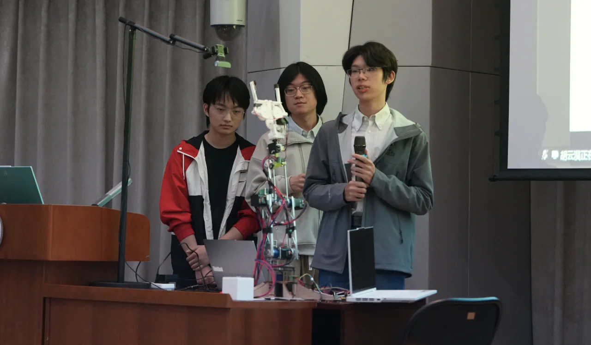

选手风采展示 ↗硬件设计大赛
硬件设计大赛由电子工程系实验教学中心与电子系学生科协联合主办，是清华大学十大赛事之一。赛事每年暑期举办，面向全校本科生，采用赛课结合模式，配套《电子系统专题设计与制作》实践课程。
比赛支持 1–3 人自由组队，选题开放，可选用 Arduino、STM32 等开发平台。系列培训覆盖电路焊接、单片机开发、串口通信与软硬件联调，零基础同学也可参与。参赛队伍自主完成方案设计、实物制作与调试，并在决赛中展示作品，由专业教师担任评审。
硬件部是电子系学生科协的组成部门，专注于为电子系同学提供硬件开发学习资源，建立与硬件相关的科技创新和竞赛平台，与你一同开启硬核之旅。

选手风采展示 ↗硬件设计大赛由电子工程系实验教学中心与电子系学生科协联合主办，是清华大学十大赛事之一。赛事每年暑期举办，面向全校本科生，采用赛课结合模式，配套《电子系统专题设计与制作》实践课程。
比赛支持 1–3 人自由组队，选题开放，可选用 Arduino、STM32 等开发平台。系列培训覆盖电路焊接、单片机开发、串口通信与软硬件联调，零基础同学也可参与。参赛队伍自主完成方案设计、实物制作与调试，并在决赛中展示作品，由专业教师担任评审。
“安世杯”挑战赛由清华大学电子工程系主办、安世半导体企业支持，依托电子系实验教学中心与学生科协组织开展，面向全校本科生开放报名。赛事以无线充电智能小车为核心载体，重点考查功率电子、嵌入式控制、电路调试与系统集成等工程能力。
参赛队伍协作完成硬件搭建、驱动开发、算法调优与整机联调，在指定赛道进行性能比拼与功能创新。赛事配套技术培训和元器件资源支持，兼顾入门实践与高阶创新，由校内教师与企业工程师共同担任评审。
硬件部每年组织假期培训，带领新部员学习更为体系化的硬件知识与技术。培训采用项目式学习（Project-Based Learning，PBL）的形式，让部员在具体项目中体验更高阶的硬件开发。
培训将知识学习与动手实践相结合，帮助新部员进一步理解硬件开发的过程，为后续参与项目和赛事工作积累经验。
硬件部通过无限之声 SAST Weekly 平台，分享开发经验与前沿科技知识。技术交流是部门日常工作的重要组成部分，也是同学们了解硬件开发、交流学习体会的途径。
围绕硬件开发中的实践经验开展分享，为同学们的学习与项目实践提供参考。
介绍与硬件相关的前沿科技知识，帮助同学们拓展技术视野，了解新的研究与应用方向。
与相关部门合作举办硬设民生赛道，将硬件设计实践与民生主题相结合。
参与拾光讲堂的合作举办，为同学们提供交流与学习的机会。
与系内外部门合作举办 EE 黑客松，支持同学们参与科技创新实践。
参与光电设计大赛的合作举办，为同学们提供更多科技竞赛与设计实践的机会。